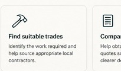

01
Find suitable
trades
Identify the work required and help source appropriate local contractors.
Find out more →Once you've accepted a cash settlement, you may still need to find trades, compare quotes and coordinate the repair. We help organise the practical work of getting it done.
See if we can help →A cash settlement gives you the funds, but it can also leave you responsible for finding trades, comparing quotes, organising the work and keeping everything moving.
Identify the work required and help source appropriate local contractors.
Find out more →Help obtain and compare quotes so you can make a clearer decision.
Find out more →Help keep contractors, schedules and documentation organised through the repair.
Find out more →
Our role is simple: help turn a settlement into an organised repair without taking over decisions that belong to you.
Understand the scopeReview what needs to be repaired and identify practical next steps.
Source the right tradesHelp identify contractors relevant to the work involved.
Keep it movingCoordinate communication, schedules and repair documentation.
Share a few details about what happened, the property and where you're currently at.
We look at the situation and help identify the practical next steps.
We assist with trades, quotes and the process of moving the repair towards completion.
This service is designed for homeowners who have already accepted a cash settlement and now need practical help getting the repair organised.
No. We are an independent post-settlement repair coordination service.
No. We do not determine insurance entitlement, coverage or settlement amounts.
The intention is to coordinate appropriately licensed contractors rather than perform construction work ourselves.
Tell us a little about your situation. We can then determine whether the service is suitable.
Tell us what you're dealing with and we'll let you know whether we may be able to help.